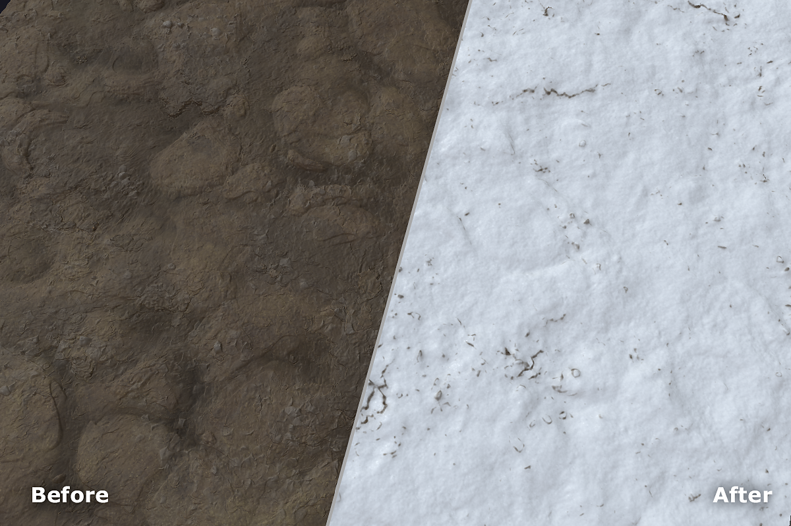

Use the Snow filter to add anything from a dusting to a few feet of snow to your material.

Parameters
Basic parameters
Random Seed: The random seed determines the random values of other parameters that use randomness in this filter.
Fresh Snow: 0-1 Change the amount of snow.
Melted Snow: 0-1 Control the amount of melted snow. This parameter is highly sensitive.
Buildup: 0-1 Adjust how much the snow has built up over time. This obscures underlying height details.
Smoothness: 0-1 Control how smooth the snow appears. This obscures underlying height details when increased, and can make snow appear softer and deeper.
Flakes Intensity: 0-1 Adjust how visible individual flakes of snow are.
Use Custom Mask: toggle Enable or disable the use of a custom mask. If enabled the following parameters appear:
Custom Mask: image/brush Select an image to use as a mask or use the brush to paint a custom mask directly in the 2D view.
Mask Blur: 0-1 Blur the mask.
Mask Intensity: 0-1 Adjust the opacity of the mask.